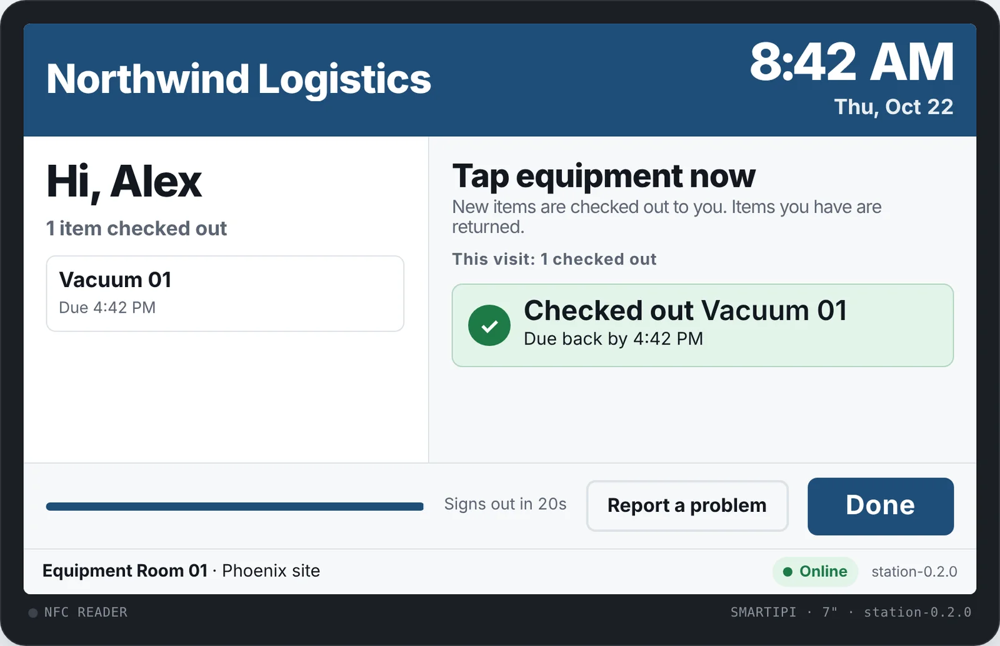
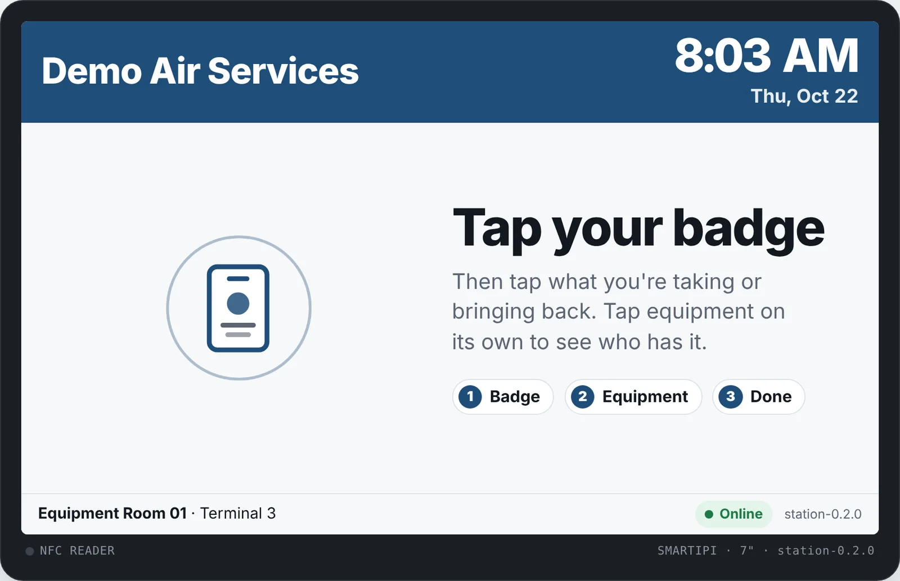
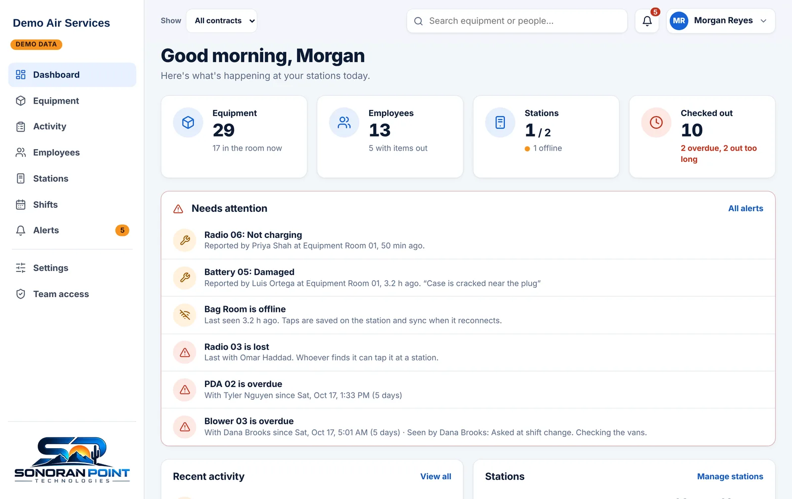

Know where every asset is, and who has it.
Checkout and tracking people actually use. Tap a badge, tap the item, done. Every tool, radio, laptop and key is tied to a person, with an alert the moment something's late.

Checkout and tracking people actually use. Tap a badge, tap the item, done. Every tool, radio, laptop and key is tied to a person, with an alert the moment something's late.

Tracking only works if people do it every time. A station by the door makes it a three-second habit: no logins, no typing, no clipboard.

Every checkout has a name and a time on it. Managers see the whole picture on any computer or phone.

Build your company the way it's actually run, as many levels deep as you need, and put a station wherever things are kept.
If it walks off, it can be tracked.
A touchscreen station with an NFC reader built in. Mount it where things are kept and plug it in.
Questions, pricing or a pilot: support@sonoranpoint.com